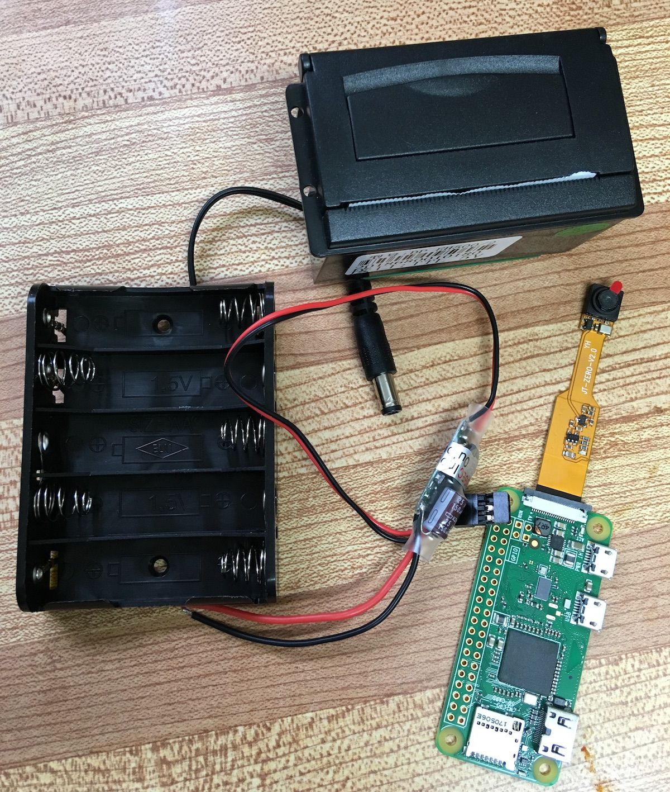
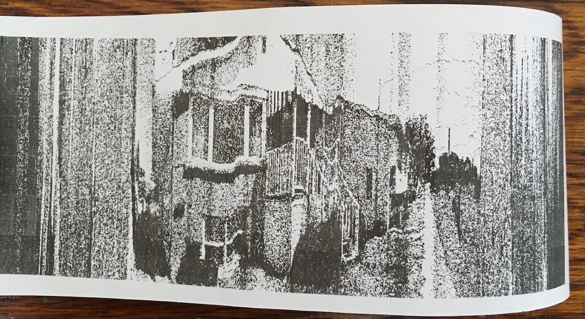
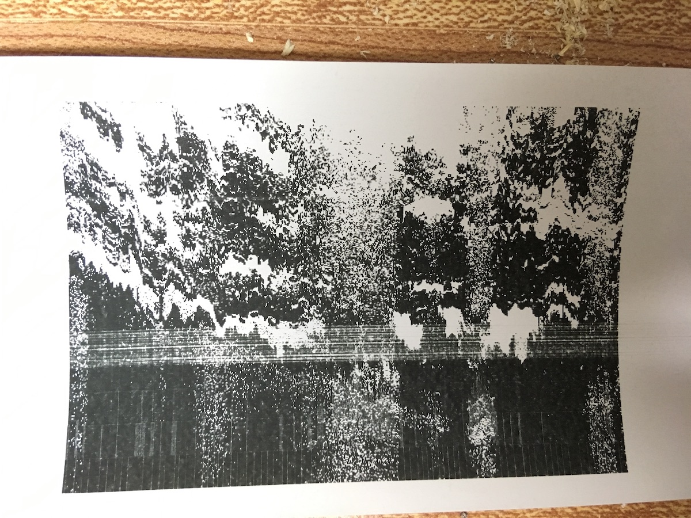
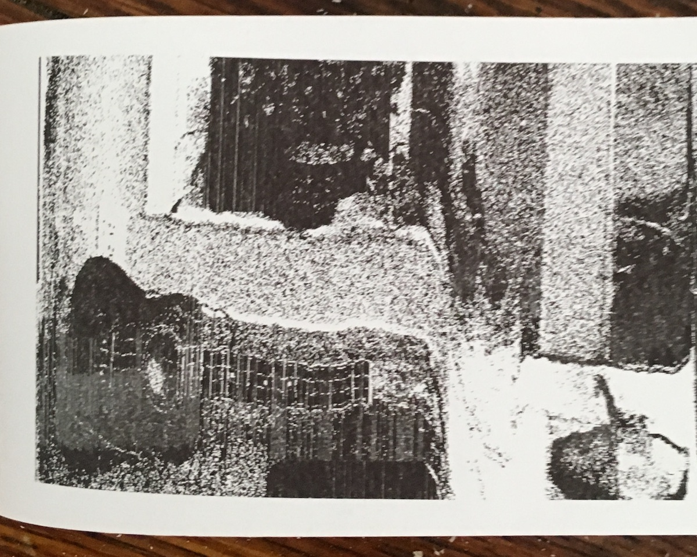
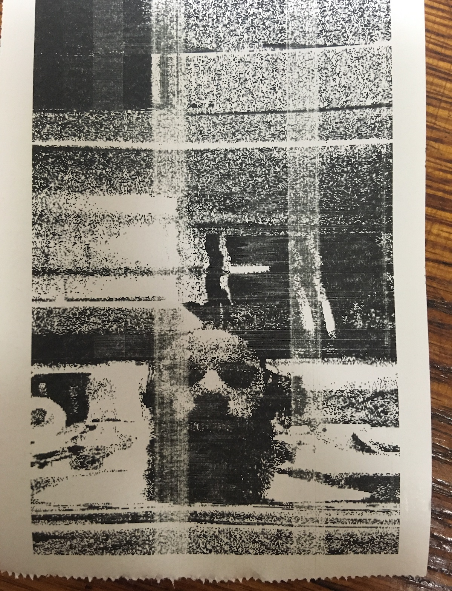
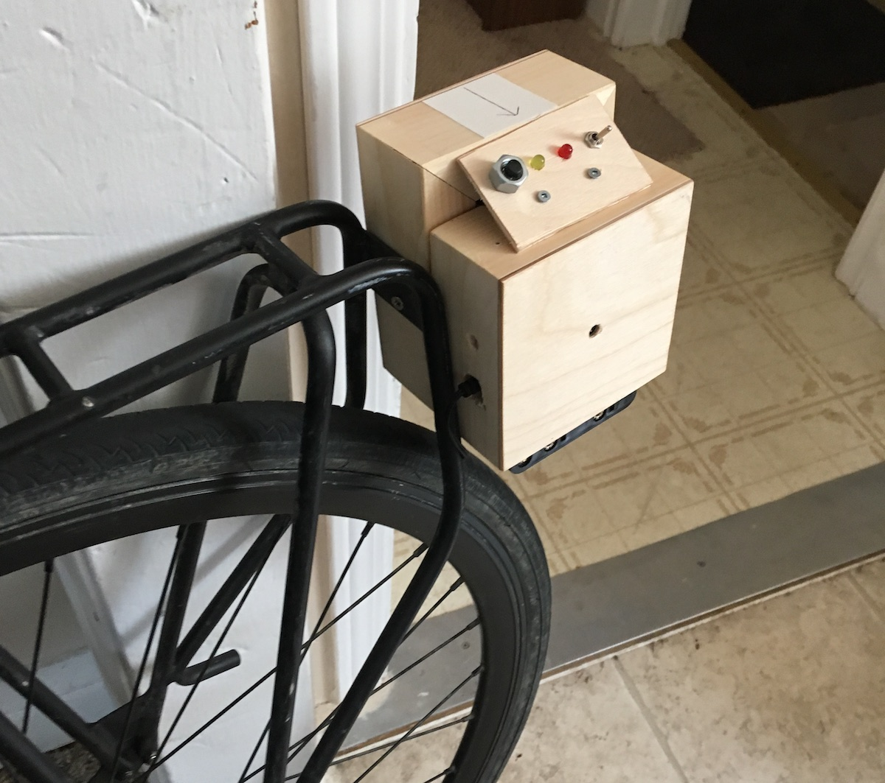
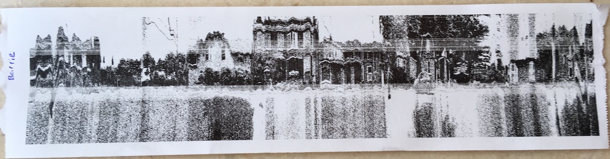
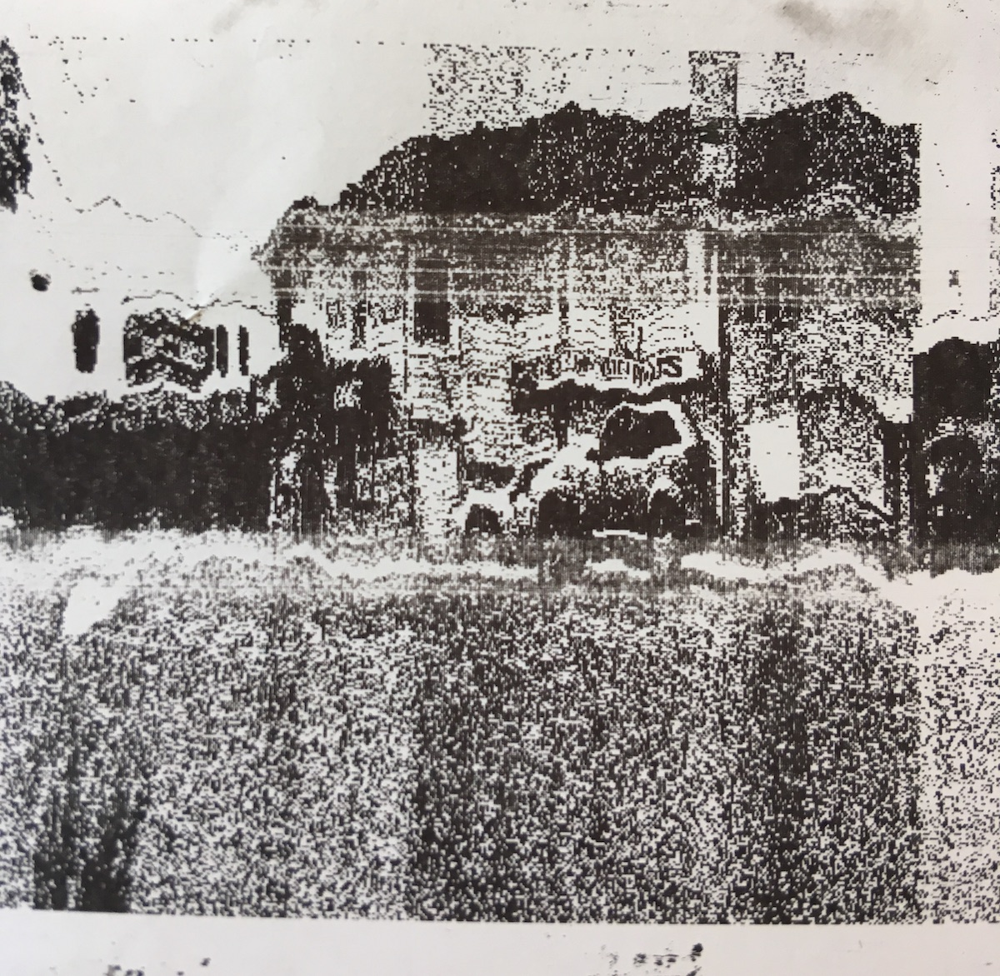
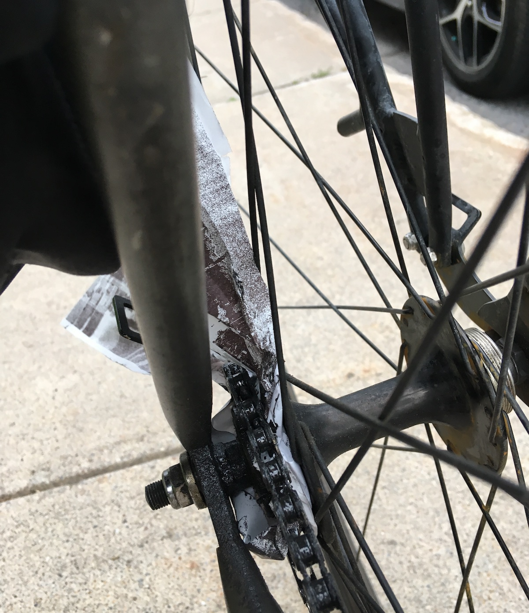

Scancam is a slit-scan instant camera. One vertical column of pixels from a small camera module is sent continuously to a thermal receipt printer. It is an experiment in perspective.

The basic parts include a very small thermal receipt printer, a battery holder, switching power regulator, small raspberry pi comptuter, and camera module.
The videos above show one of the first tests with the original prototype, and a test of an installation idea: capturing street-level views of city blocks and recreating them in space that you can move around in.
Standing in one place and slowly turning rotating the camera from left to right captures images with a single-point perspective. They look pretty normal, except for the distortions created by hand-holding.

If the camera moves while capturing the image, the single-point perspective is lost. The following was captured by pointing scancam at the centre of a tree, and walking one full rotation around it.

Holding the camera's orientation constant and moving it horizontally captures orthographic projections of a scene on th x-axis. This image of a ukulele was captured with that technique:

This self-portrait maintains the single-point perspective, but the camera was held sideways, to scan vertically instead of horizontally:

After some hand-held and long-board-gliding tests (thanks Jill!), I mounted scancam on my bike rack, in order to capture continous street-level views of neighbourhoods.


Since scancam is slow, I have to ride as slow as I can, which makes it hard to balance, so the distortions can be pretty drastic. The image still usually comes through though, sometimes including bits of text on store signs.

And sometimes the wind feeds my streamer of rendered street-view image into the drive-train of my bike. My friend Syd suggests that I'm “integrating mediums with process” :)
